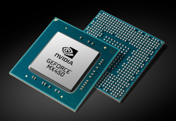

AI as a goal for humankind¶
There are over 66 thousands species of vertebrates (suomeksi: selkärankainen) in the planet Earth. What makes the Homo sapiens (man the wise) different from each other?
What is the next goal of humankind, after the fight for climate change is won?
Dr Yval Harari’s opinion is that we want to be able to extend the capabilities of the human being, and create life and intelligence of it’s own.
This requires, in addition to understanding what intelligence is, the capability to implement intelligent artifacts.
We already extend human senses, memory and information processing capacity with technology, and a great deal of researchers continue striving for the development of artificial intelligence (AI) and artificial life (AL), like they have always did.
AI from myths to robots¶
The creation of humanoid robots and intelligent structures has been dreamed by a human kind as long as there is information available.
Talos was a mythical giant artifact in Greek mythology. It was a human like bronze sculpture which was forget with the help of magical powers and animated by ethereal fluid called Ichor. When the Ichor was let out, the sculpture stop functioning and “died”. The mythical Talos-sculpture had super human like abilities and intelligence. The copying and improving a human being is still one of the goals of AI research.
The Frankestein’s monster is the similar fictional story of the modern times, and humanoid robots are becoming reality today.
While Talos was animated by magical powers, the Frankenstein’s monster was a dead person, in which the life was brought using then recent scientific methods: alchemy, chemistry and electricity, and the humanoid robots are powered by neural networks and deep learning, which is our current technology for creating intelligence.
Scientific development of ingredients for AI¶
More recent development of artificial intelligence is often based on formal reasoning, a mechanization of human inference.
It was first developed by philosophers
deductive reasoning through syllogisms by Aristotle (384-322 BCE),
geometry by Euclid (300 BCE),
algebra by al-Khwārizmī (813-833 CE) , and
parsimonious reasoning by William of Ockham (1285-1347 CE)
Modern time development¶
Charles Babbage (1791-1871) created a theoretical concept of a digital programmable computer (Analytical engine)
Ada Lovelace (1815-1852) speculated that it could be used for composing music of any complexity. The ideas of hardware and algorithm (software) were created.
Computer science started in the beginning of 20th century still without computers
Kurt Gödel (1906-1978): the limits of provability of logical theorems. His second incompleteness theorem for example states that a consistent system of axioms, whose theorems can be listed, cannot prove its own consistency.
Alan Turing (1912-1954) used formalized the concepts of algorithm and computation using an artificial logical machine, called as Turing Machine. Turing used his machine to break cryptographically secured messages during World War II.
The ERA of computers¶
The research had found out that the human brain consists of neurons and scientists created artificial neurons to perform simple logical functions and connected many of them as artificial neural networks (ANN) for more complex operations.
The goal was to mimic the structure of human brains to be able to make intelligent decisions. First researchers started to study the processing of symbols in addition to numbers and the idea of AI that a computer can have a mind as humans do, emerged.
The research field of AI is said to be established in the Dartmouth Conference of 1956. After the conference the field of AI started to develop very rapidly and plenty of resources were used for it’s development.

Discussion¶
In Blade Runner movie (1982), agent Deckard is hunting for replicants (AI robots), made by mighty Tyrell-corporation. Watch the scene Deckard Meets Rachel and consider, how did Deckard studied if Rachel is a replicant or a human? What is the connection with so called Turing test? Why it was so difficult for him to find out the truth in Rachel? The answer to the last question is in the following scene starting from 1:15 Deckard Meets Rachel, scene continues How is that related to self consciousness of AI?
Historical methods for AI¶
Axiom based AI
developed before 1960s
small number of axioms are weak in solving complex problems
it is important to include a rich base of knowledge in the the system
This development lead to so called Knowledge-Based Systems.
Searching tecnhiques
Some problems can be solved by searching the space of potential actions step by step, from the database until the solution is found.
Natural language processing (NLP)
natural communication with a human being has been one important goal of AI.
consists of understanding the written or spoken natural language, mapping the semantics of natural language concepts and synthesizing written or spoken texts.
direct relation to Turing’s test.
Can computer ever be as intelligent as human being?
At least there can be a seemingly intelligent machine which can communicate with a natural language mimicking human behavior so closely that it is indistinguishable from a human being by a human observer.
Passing the “Turing’s test” has been one of a long term goal for natural language processing and AI.
AI in Micro worlds:
AI ideas can be more effectively implemented in a reduced world, when unnecessary details have been removed
artificially simplistic description of reality, where sufficient AI models can be build.
Plenty of research has focused on so-called blocks world, which consists of only coloured blocs of different shapes and sizes on a flat surface.
Also applied to NLP systems which were able to carry out conversations in simple stereotypical situations, without actually understanding the content of the conversation.
Lot of influence in Many machine vision system, where the world is modeled with simple geometrical shapes created from the images.
Many of these historical methods are fundamental enough to be still in use.
Perceptron is still a core of modern deep learning methods
NLP is still an active research area.
However, today we talk more about weak vs strong AI
Weak AI or narrow AI are AI implementations for a narrow task in a limited environment.
For example, the Siri assistant can understand speech, search data and create virtually intelligent answers without actually understanding the content
it is not intelligent in the same manner than human being.
Most (All) of the practical AI implementations today are examples of Weak AI.
Strong AI or General AI would be AI which is seemingly intelligent
It could solve general problems by applying previously knowledge in the same manner than human being.
Sometimes self consciousness is also listed as a requirement for Strong AI.
Discussion: Testing intelligence¶
In Blade Runner movie (1982), agent Deckard is hunting for replicants (AI robots), made by mighty Tyrell-corporation. Watch the scene Deckard Meets Rachel and consider, how did Deckard studied if Rachel is a replicant or a human? What is the connection with so called Turing test? Why it was so difficult for him to find out the truth in Rachel? The answer to the last question is in the following scene starting from 1:15 Deckard Meets Rachel, scene continues How is that related to self consciousness of AI?
Discussion: Self consciousness¶
What is self consciousness? How could an AI gain Self consciousness, by simply including itself into simulation? What would be the impacts of self conciousness?
Key drivers for development of AI¶
Computing power: AI needs powerful processing of information which can be achieved by using fast computers. The fast development of computers has enabled the fast development of AI.
Availability of data: The AI is based on data. The digitalisation of the society has created plenty of embedded sensors and social media which produce a vast amount of data, which can be used for training AI to solve problems. It has been claimed that 90% of the data ever created was created during last two years.
Algorithms and tools: The development of AI algorithms and tools bring AI to be accessible to everyone and accelerate the development of AI itself.

Definition of AI¶
According to the wordbook definition, AI is present, when a computer or a computer controlled robot behaves like intelligent being.
Artificial intelligence (AI), the ability of a digital computer or computer-controlled robot to perform tasks commonly associated with intelligent beings.
-Ensyclopædia Britannica
B. J. Copeland seems to agree with this definition, and continues explaining that a human is one of those intelligent beings, which can be used as a measure of intelligence. He further continues that everything a human does is not necessarily a manifestation of intelligence, but reasoning, discovering a meaning, ability to generalize and learning from the past are truly intelligent behavior.
Artificial intelligence (AI), the ability of a digital computer or computer-controlled robot to perform tasks commonly associated with intelligent beings. The term is frequently applied to the project of developing systems endowed with the intellectual processes characteristic of humans, such as the ability to reason, discover meaning, generalize, or learn from past experience.
Wikipedia finds Machine Intelligence as a synonym for Artificial Intelligence and recognizes the intelligence of other beings as humans as well
In computer science, artificial intelligence (AI), sometimes called machine intelligence, is intelligence demonstrated by machines, in contrast to the natural intelligence displayed by humans and animals.
-Wikipedia
Russel et.al. conclude that AI can be human kind of thinking and acting demonstrated by artifacts, but also simply rational thinking and acting. Rational thinking is decision making based on correct rules, “laws of thought”. The rational thinking framework can be based for example on logics, mathematics or statistics.
Definitions:¶
Thinking is using knowledge and information to make plans, interpret and model the world and constructively interact with and make predictions of the world.
AI is “human like” or simply rational thinking, decision making, and acting demonstrated by artifacts.
Discussion¶
What is the measure of intelligence? What if we meet with an extraterrestial being or an AI which is more intelligent than us. How can we know that it is more intelligent than us?
Definitions of different forms of AI according to the course book (Artificial Intelligence, a Modern Approach, Russel et.al:
Human like thinking: Studying how humans think and using the same methods in AI. This approach was used in early AI development but many contemporary methods differ from human thinking.
Acting humanly: Computer systems trying to carry out human like conversations so that they are indistinguishable from a real person. Target ḿay be to complete Turing’s test. Humanoid robots try to mimic human behavior. Acting like human does not necessarily require machien to think like human.
Rational thinking: Making correct decisions based on formal rules.
Acting rationally: An artificial agent acts to achieve the best outcome or the best expected outcome in case of uncertainty.
Does the rationality criteria provide a definition of AI which is independent on human intelligence?
x=2